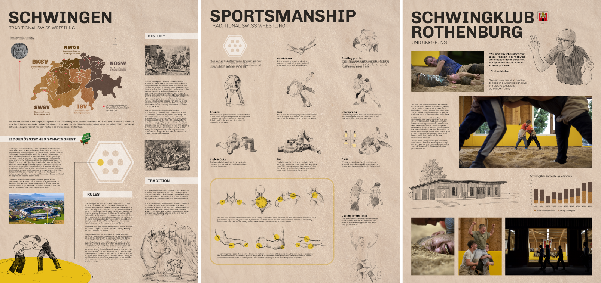
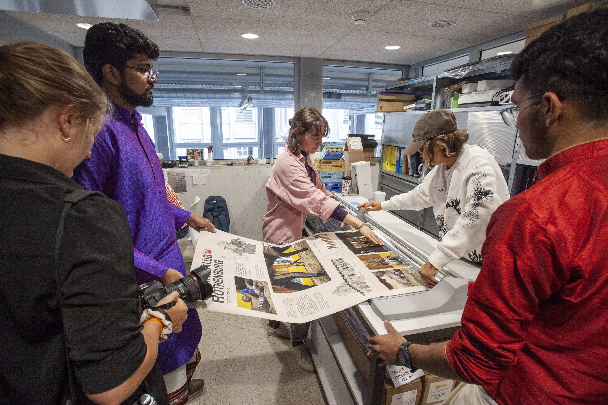
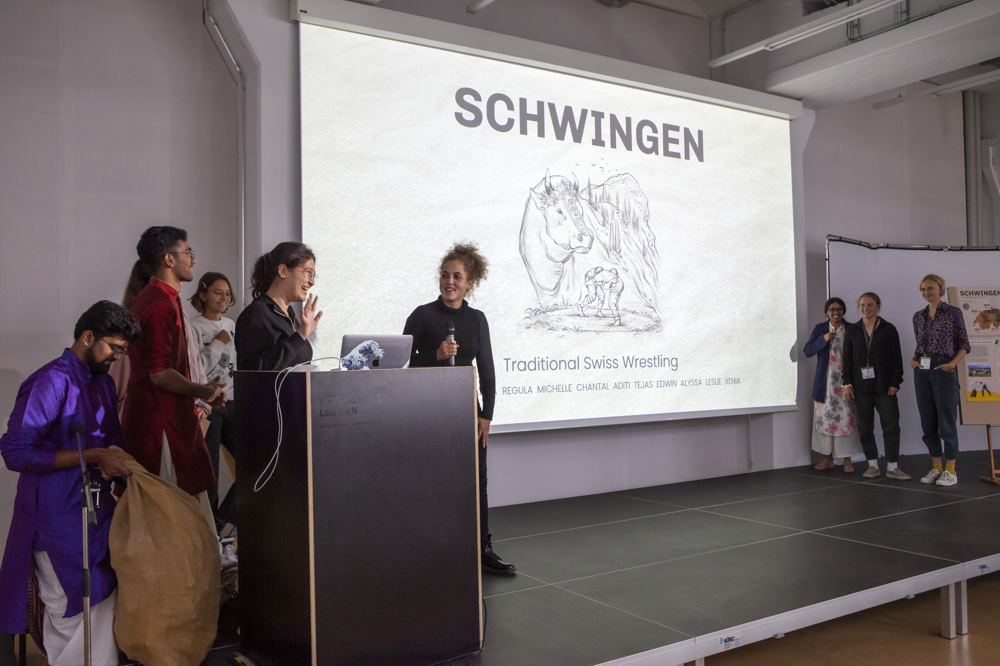
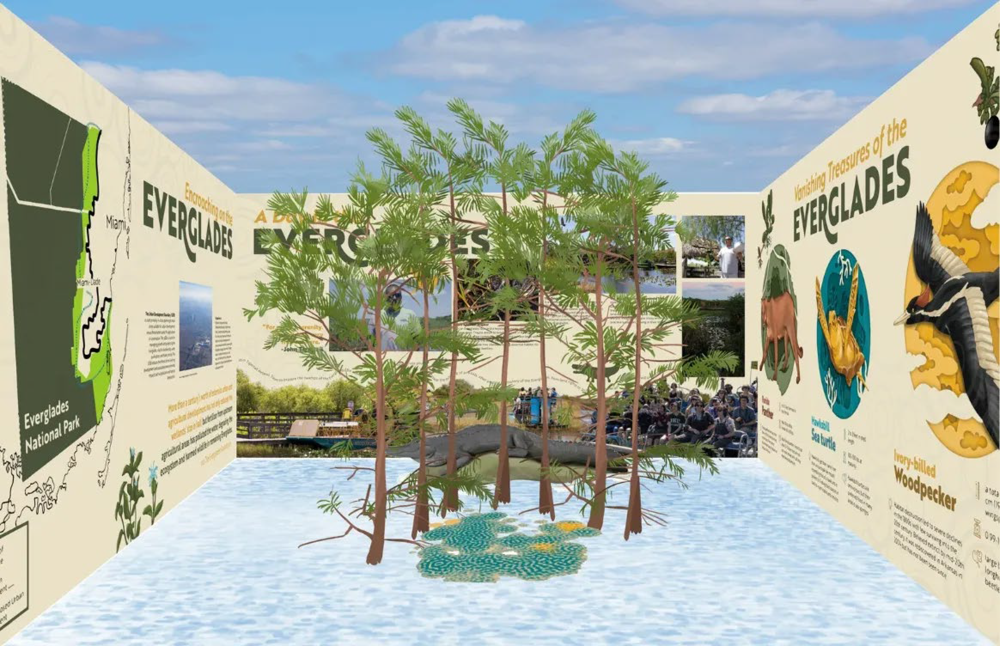
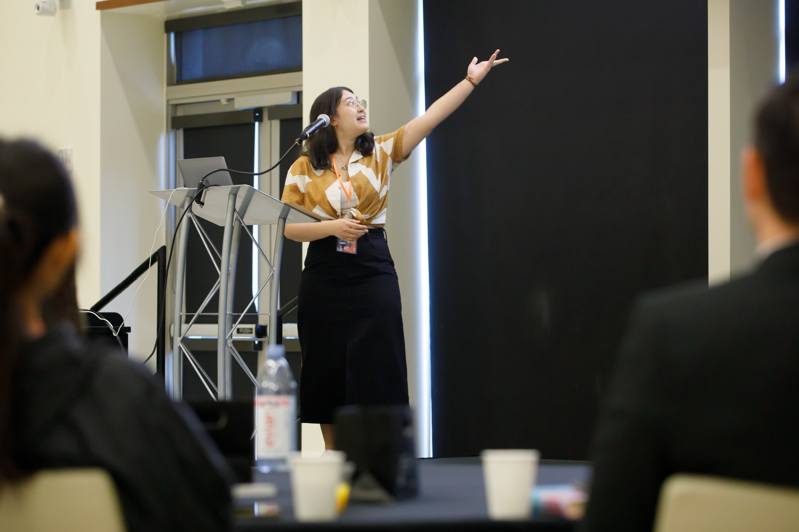
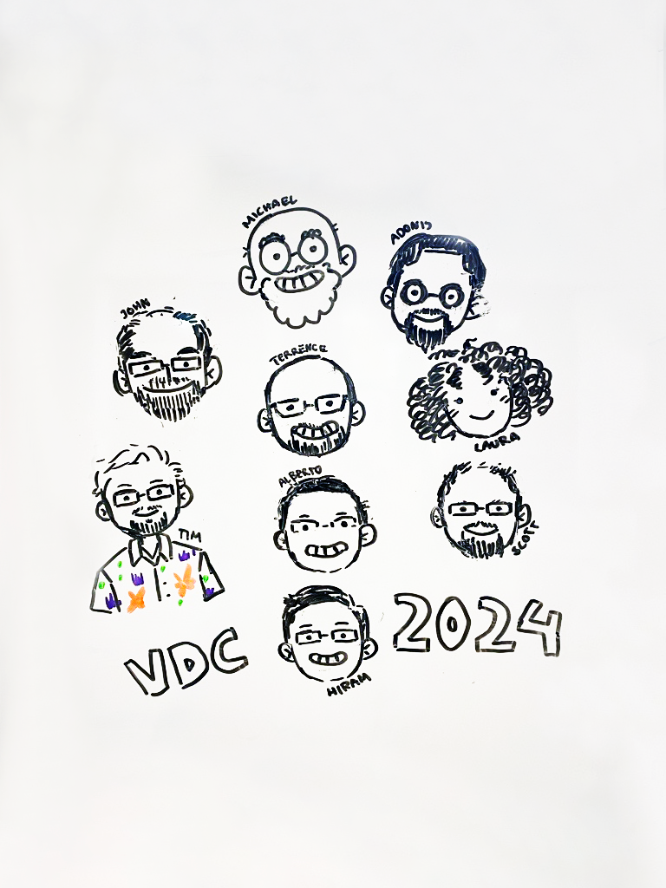
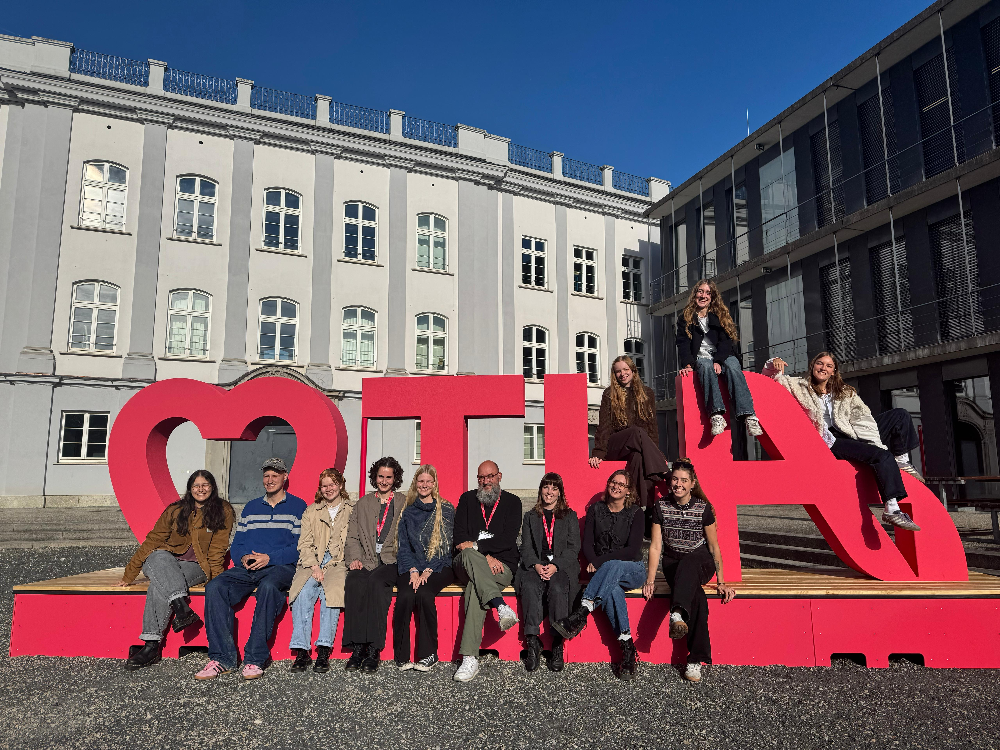

Visual Discovery Conference
Die Visual Discovery Conference (VDC), gegründet von Prof. Michael Stoll und John Grimmwade, ist eine internationale Designkonferenz, bei der Studierende aus verschiedenen Ländern gemeinsam an kreativen Projekten zu regionalen Themen arbeiten. Besonders prägend sind dabei der interdisziplinäre Austausch, die Zusammenarbeit im Team und das gemeinsame Entwickeln neuer Perspektiven. 2022 gestaltete meine Gruppe in Luzern drei Infografiken über den Schweizer Traditionssport „Schwingen“. 2024 nahm ich in Miami erstmals auch als Rednerin teil und entwickelte mit meinem Team eine interaktive Erfahrung über die bedrohte Flora und Fauna der Everglades. 2025 entstand in Augsburg eine interaktive App zum Thema Wasser. Die VDC zeigt, wie Design regionale Besonderheiten sichtbar machen und gesellschaftlich relevante Themen vermitteln kann.






